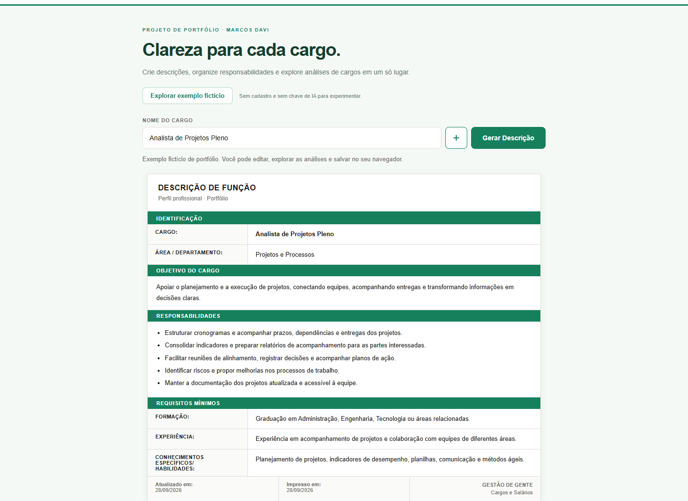
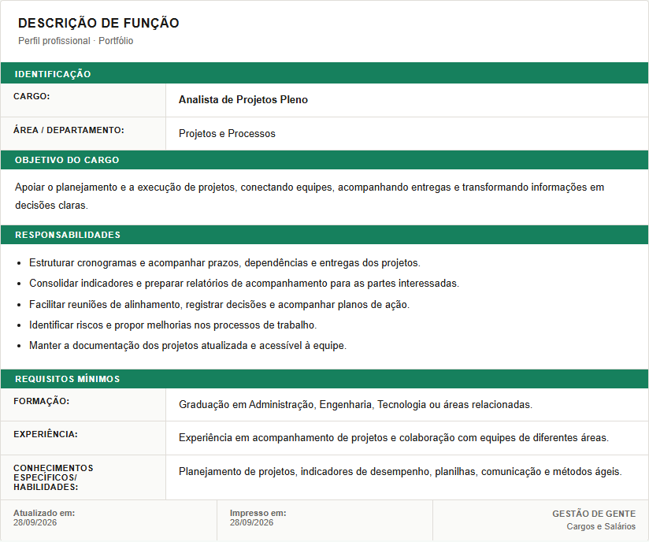

Criação com contexto
Combina o nome do cargo e informações da área para apoiar a geração de uma descrição com IA.
PROJETO DE PORTFÓLIO · MARCOS DAVI
Uma aplicação que conecta descrições de cargos, análise de complexidade, grading e referências salariais para apoiar a gestão de cargos e salários.
Demonstrações utilizam exclusivamente informações fictícias.

O PROJETO EM IMAGENS
As imagens mostram telas reais da aplicação, preenchidas com exemplos fictícios. Navegue pelas etapas para entender como cada recurso funciona.

As análises são estimativas orientativas. As telas desta apresentação usam apenas dados fictícios, sem marcas corporativas.
VISÃO DO PRODUTO
Descrever um cargo exige clareza sobre seu objetivo, suas entregas e os conhecimentos necessários. O projeto concentra essas informações em um fluxo de criação, revisão e organização.
Informe o cargo e seu contexto, gere uma primeira versão com IA e revise o conteúdo. Depois, salve na biblioteca e prepare o documento para compartilhar. A revisão humana faz parte do processo.
CAPACIDADES
Combina o nome do cargo e informações da área para apoiar a geração de uma descrição com IA.
Permite editar objetivo, responsabilidades, formação, experiência e conhecimentos.
Reúne descrições em pastas, com busca e seleção para impressão ou exportação em lote.
Relaciona a leitura do cargo a painéis de complexidade, grading e pesquisa salarial, com comparação regional por UF.
CARGOS, GRADING E REMUNERAÇÃO
Responsabilidades, conhecimentos, autonomia e impacto ajudam a compreender o tamanho do papel. O projeto reúne essa leitura e as referências de remuneração na mesma experiência, para apoiar a comparação entre cargos.
O painel apresenta família, carreira ou nível estimado e uma justificativa. Reúne leituras conceituais de Korn Ferry/Hay e Mercer IPE, com fatores como conhecimento, solução de problemas, responsabilidade, impacto e comunicação.
Esse enquadramento ajuda a discutir a coerência entre o escopo descrito, a senioridade e o posicionamento do cargo.
Apresenta média Brasil, faixa salarial indicativa e comparação entre estados. O sistema prioriza um benchmark cadastrado quando há correspondência; nos demais casos, usa uma estimativa por IA calibrada pela trilha e senioridade.
O ajuste regional utiliza índices gerais do Novo CAGED/2025. A consulta por UF permite explorar diferenças geográficas na referência de salário-base mensal.
Descrição e complexidade → contexto comum para grading e pesquisa salarial. O grading ajuda a interpretar o posicionamento do cargo; a pesquisa salarial acrescenta uma referência de remuneração. A leitura conjunta apoia a discussão sobre coerência entre responsabilidades, nível e faixa salarial.
No funcionamento atual, não há conversão automática de grade em salário. A estimativa salarial considera o cargo, sua descrição, senioridade e complexidade; os painéis devem ser interpretados em conjunto.
Grading orientativo, sem equivalência oficial ou vínculo com Korn Ferry ou Mercer. As referências salariais não são uma pesquisa de mercado em tempo real; valores por UF ajustados por índice não representam médias oficiais específicas do cargo.
CONSTRUÇÃO
APRESENTAÇÃO
Abra a demo e carregue o exemplo fictício para explorar a edição e a biblioteca, sem chave de IA. Para conversar sobre o projeto, entre em contato pelo LinkedIn.